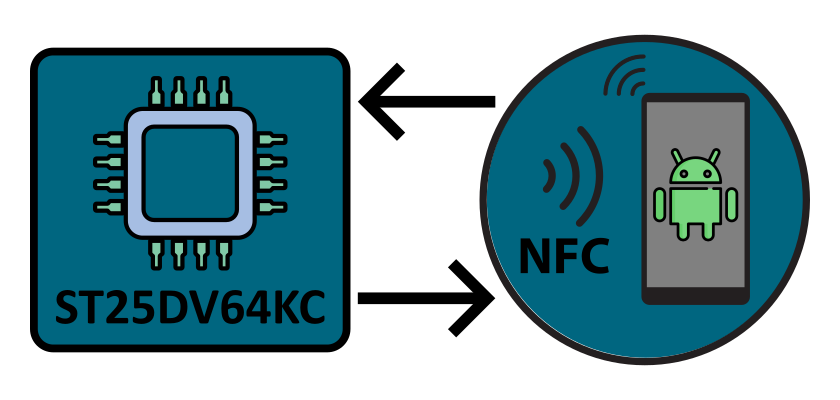

Passionate software developer with expertise in C, C++, and C#, specializing in embedded systems and electronic hardware engineering. The portfolio highlights a range of interesting embedded projects and Windows applications, demonstrating a strong focus on creating robust and efficient solutions.
About me
In 2010, I began learning C programming, driven by the need for software that didn't exist. Determined to create it myself, I discovered a passion for programming that has guided me ever since. Over the years, I have completed numerous projects and mastered several programming languages, covering a wide range of areas including desktop development, mobile development, embedded systems, and web design.
+ Background
I am a self-taught software developer and electronics enthusiast with a professional background as an industrial mechanic. My career journey began in 2008 when I transitioned into CNC machining, where I have worked as a CNC programmer and operator ever since.
My passion for programming was sparked in 2010 when I began learning C. This initial exploration expanded into C++ and even assembly language programming for modern x86 architectures. Over time, my curiosity led me to develop mobile applications using Java, Kotlin, and Swift, as well as experiment with web technologies such as HTML, CSS, and JavaScript. Despite this diverse experience, I consistently return to C and C++, which remain my true passion.
In 2015, I ventured into embedded systems development, purchasing my first microcontroller and diving into firmware programming. Since then, I have developed applications for various platforms, including Atmel, STMicroelectronics, Texas Instruments, Nordic Semiconductor, and Espressif.
In recent years, my commitment to professional growth has intensified. I have immersed myself in mastering advanced software development practices, such as clean software architecture, object-oriented programming, clean code principles, design patterns, unit testing, test-driven development, and requirement engineering. This relentless pursuit of knowledge drives me to create high-quality, efficient, and maintainable software solutions.
+ Knowledge
Programming Languages:
- C, C++ and C#
- Android - Kotlin
- iOS - Swift
- HTML, CSS & Javascript
- SQL, PostgreSQL
Development Environment (IDE):
- Visual Studio
- Visual Studio Code
- Stm32 Cube IDE
- Microchip Studio & MPLab X
- Android Studio
- XCode
Principles & Concepts:
- SOLID Principles
- Clean Architecture
- Clean Code
- TestDriven Development
- Requirements Engineering
Scripting Knowledge:
- CMake
- NSIS
- PowerShell
Operating Systems:
- All Windows Operating Systems
- Windows Server 2019/2022
- Linux (Kali Linux, Ubuntu, Debian)
- Mac OS
Electrical Engineering:
- PCB Design with Eagle
- Analog and Digital Circuit Design
Manufacturing & Construction
- CAD with Fusion 360
- 3D Printing
- CNC Lathe and Milling
Other Skills:
- Unified Modeling Language (UML)
- Nmap, Metasploit, Wireshark
- Clean Code, Software Design Patterns, Agile Development
- German (native)
- English (B2)
- Driving License Class B
Read More
Portfolio
Liquid Dispenser Project (C/C++)
The Liquid Dispenser project is a comprehensive demonstration of embedded systems design and development, showcasing my expertise across a range of technical areas. This project was created as a portfolio piece to highlight my embedded development skills. It integrates hardware control, real-time communication, and user interface components in a dynamic application.
LaRoomy - Bluetooth Control
The LaRoomy Bluetooth-Control-System is made to quickly implement Bluetooth remote control features in embedded projects. It consists of the LaRoomy App and the LaRoomy API, a remote framework for embedded systems.
The cababilities of a remote device will be fetched by the LaRoomy App during the connection process and presented to the user. Now the user is able to control the remote device with the LaRoomy App through a unique app view customized for the specific remote device.

• LaRoomy App (Kotlin/Swift)
The LaRoomy App for Android is written in Kotlin and the LaRoomy App for iOS is written in Swift. The iOS version is currently under development and not available in the App Store by now.

• LaRoomy API for 32bit architectures (C/C++)
With the LaRoomy API all device capabilities can be defined in the source code of the remote device. The LaRoomy App adapts to the capabilities of the device and shows only necessary elements in the user interface which conforms to the properties of the device.
The API is available for different microcontroller architectures: Atmel SAM, Espressif ESP32, ST STM32 and Nordic nRF52. Examples are provided for all libraries.
• LaRoomy API for 8bit architectures (C)
This is a minimized version of the LaRoomy API for 8bit architectures. It is written in C. The GitHub repository contains application examples and a test board with schematic and pcb layout.
DNS-SD Device Control Project (C#/C++)
This project contains two elements, a windows application written in C# and a firmware project for the ESP32 microcontroller written in C++. The windows application acts as a dns-sd server. Every remote device which comes online in the local network connects automatically to the dns-sd server. Once the connection is established, a secure connection will be constructed by using symetric and assymetric encryption methods to achieve an end-to-end encryption.
NC Suite - Advanced NC Editor (C#)
NC-Suite is a Windows Store application I developed in C#, designed for professionals working with CNC machines and 3D printers. As the successor to my earlier CNC-Suite, it demonstrates expertise in file management and processing for specialized industries. The application features a built-in file explorer for organizing NC and G-code files, along with a detailed file history system for version tracking. I developed custom algorithms for parsing and editing NC programs and G-code, ensuring compatibility and performance, and included a technical drawing viewer with precise rendering for industry-standard formats. NC-Suite also integrates advanced search capabilities and a flexible template management system, built with modularity and scalability in mind. The clean architecture and responsive UI adhere to Windows Store guidelines, ensuring a seamless user experience. This project highlights my skills in software architecture, data handling, and UI/UX design, as well as my ability to deliver high-performing applications tailored to industry needs.
Android NFC Control (Kotlin)
This Android application enables communication with the ST25DV64KC chip via NFC. It serves as a demonstration of using Android NFC APIs to interact with STMicroelectronics' X-NUCLEO-NFC07A1 expansion board. The app is designed for a single-page interface where users can transmit and receive data to and from the ST25DV64KC chip using the Fast-Mailbox transfer mode.
CNC Suite - Extended NC Editor (C/C++)
This desktop app is a tool to create, edit and archive CNC programs. Moreover it handles the serial data transmission from and to a machines with RS232 interface. It is written in C++ with a litte shade of C and assembly. It is also available in the Microsoft Store.
Serial Monitoring Tool (C#)
A lightweight and intuitive App to monitor up to four Serial Ports at the same time. The app is written in C# with the .NET Framework and the WinUI UX-Platform. The app is available in the Microsoft Store.
TV Extension Unit
The TV Extension Device is an innovative project that automates the operation of a bedroom TV system. Mounted on a cupboard, the device features sliding doors, a linear drive to extend the TV, and a tilt mechanism for optimal viewing angles. The system is powered by a custom PCB with an Atmega328 microcontroller, integrating motor control, endpoint sensors, and Bluetooth functionality via an HM-10 module. The firmware, written in C, ensures precise coordination of all components. This project demonstrates expertise in mechanics, electronics, and embedded software development, offering a seamless and modern user experience.
Serial Data Transmission Utilities
While working as a CNC-Programmer it was a recurrent problem to find an application for modern systems which is capable to communicate with older machines via RS232 interface to transmit G-Code based CNC programs. So I decided to create this app by myself.
On my way to this objective and when I published the first UWP app EPL-Exchange (written in C#) on the Microsoft Store, I realized that this is not only a problem of mine. Many other companies using older machines are concerned by this subject. With the feedback to my existing apps and information and requests from other companies, I created different solutions to cover many requirements including a platform independent wireless interface.
• EPL Exchange - UWP app written in C#
EPL Exchange is a tool to edit text based nc files and transmit them to or from a cnc machine. It is written for the Universal Window Platfrom in C#. When I later started to create electronic constructions, I added a terminal component to communicate with pcb modules over a UART interface.
• Transfer - Win32 desktop app (C/C++)
The purpose of the Transfer app is to exchange programs with older cnc machines via RS232 interface. After publishing my app EPL-Exchange in the Microsoft Store, I often had user request how to run the app on older windows systems. For an UWP app this is not possible, but a win32 app could be downward compatible. Therefore the app is intentionally kept simple. It runs down to Windows XP SP1.

• RS232 Websocket - A platform independent solution (C++)
One issue bothered me all the time: there was always the need for a cable connected to the machine and a desktop pc is needed in the vicinity of the machine. This was my motivation to develop a wireless and platform independent solution. A device based on an ESP8266 controller. The controller provides a websocket browser interface to enter or save programs and to transmit them to the machine. The controller converts the data and sends it over UART to a RS232 level converter.

After some experiments I had the proove of concept, so I created the board with Eagle PCB Layout Editor. The case is created with Autodesk Fusion 360 and printed with my 3D printer. The firmware for the ESP8266 is written in C++ with Visual Studio Code. The front end web interface is written in html/css/javascript.